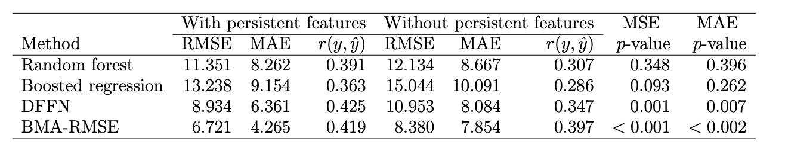

As per the records of the World Health Organization, the first formally reported incidence of Zika virus occurred in Brazil in May 2015. The disease then rapidly spread to other countries in Americas and East Asia, affecting more than 1,000,000 people. Zika virus is primarily transmitted through bites of infected mosquitoes of the species Aedes (Aedes aegypti and Aedes albopictus). The abundance of mosquitoes and, as a result, the prevalence of Zika virus infections are common in areas which have high precipitation, high temperature, and high population density.

Figure 1: Zika virus symptoms, source: CDC
Nonlinear spatio-temporal dependency of such data and lack of historical public health records make prediction of the virus spread particularly challenging. We enhance Zika forecasting by introducing the concepts of topological data analysis and, specifically, persistent homology of atmospheric variables, into the virus spread modeling. The key rationale is that topological summaries allow for capturing higher-order dependencies among atmospheric variables that otherwise might be unassessable via conventional spatio-temporal modelling approaches based on geographical proximity assessed via Euclidean distance.

Figure 2: An illustration of Vietoris–Rips filtration with varying
scales $\epsilon$.
Topological data analysis (TDA) is a rapidly emerging methodology at the interface of computational topology, statistics, and machine learning which allows for a systematic multi-lens assessment of the underlying topology and geometry of the data generating process (Zomorodian et al. 2005, Carlsson 2009, Chazal et al. 2017).
We primarily employ tools of persistent homology (PH) within the TDA framework. The ultimate idea of PH is to quantify dynamics of topological properties exhibited by the data that live in Euclidean or abstract metric space, at various resolution scales.
The PH approach is implemented in the two key steps: first, the underlying hidden topology of the observed data set is approximated using certain combinatorial objects, e.g., simplicial complexes, and then the evolution of these combinatorial objects is studied as the resolution scale varies.
One of the most widely used choices for a simplicial complex within the
TDA framework is a Vietoris--Rips complex which has gained its
popularity due to its computational properties and tractability. An
illustration of the Vietoris--Rips filtration process based on a toy
example of six points as shown in Figure 2. The filtration starts with a
ball of radius 0 ($\epsilon=0$) around each point. As the scale
$\epsilon$ increases to 0.2, 0.5, and 1 the number of connected
components decreases and new topological features, such as the loop,
appear.
We introduce a new concept of cumulative Betti numbers and then integrate the cumulative Betti numbers as topological descriptors into three predictive machine learning models: random forest, generalized boosted regression, and deep neural network. Furthermore, to better quantify for various sources of uncertainties, we combine the resulting individual model forecasts into an ensemble of the Zika spread predictions using Bayesian model averaging. The proposed methodology is illustrated in application to forecasting of the Zika space-time spread in Brazil in the year 2018. The following Table 1 summarize our findings.
Table 1 Performance summary for out-of-sample forecasts in terms of MSE, MAE and Welch’s t-test p-values constructed for MSEs and MAEs of the models with and without topological features

Table 1 indicates that topological features lead to a highly
statistically significant predictive gain, while incorporated into the
DL DFFN model. However, while topological features result in lower
predictive RMSEs for random forest and boosted regression, the
predictive gains evaluated using Welch’s $t$-test, appear to be not
significant.
In the future we plan to advance the proposed topological approach to analysis of other related climate-sensitive diseases such as chikungunya and dengue, not only in Brazil, but also in other countries. Furthermore, epidemiological forecasting can benefit from using the tools of topological data analysis for understanding the spread of diseases through examination of the joint dynamics of topological summaries of the disease rates and associated environmental and socio-economic factors.
This article is based on
Soliman, M., Lyubchich, V., Gel, Y.R. (2020). Ensemble Forecasting of the Zika Space-Time Spread with Topological Data Analysis. To appear in Environmetrics, DOI: 10.1002/env.2629.
The research has been supported in part by the grant from the U.S. National Science Foundation (NSF) DMS 1925346.
About the authors
Dr. Marwah Soliman is postdoctoral fellow at the Department of Mathematical and Statistical Sciences of Clemson University USA, marwahs@clemson.edu. Her research interests are on statistical methods for biosurveillance and risk analysis. She received her PhD in statistics from University of Texas at Dallas in 2020. Marwah is a recipient of the 2019 Best Paper Award from the American Statistical Association (ASA) Government Statistics Section (GSS), Survey Research Methods Section (SRMS), and Social Statistics Section (SSS).
Dr. Vyacheslav Lyubchich is Assistant Research Professor at the University of Maryland Center for Environmental Science USA, lyubchich@umces.edu. He received his PhD degree in statistics from Orenburg State University, Russia, and held postdoctoral positions at the University of Waterloo, Canada and the University of Texas at Dallas, USA. Vyacheslav’s interests include statistical and machine learning methods for quantification of the climate-induced risk. Jointly with his collaborators, he recently co-edited the book “Evaluating Climate Change Impacts” (Applied Environmental Statistics Series) Boca Raton, FL: CRC Press, 2020.
Dr. Yulia R. Gel is Professor at the Department of Mathematical Sciences of University of Texas at Dallas USA, ygl@utdallas.edu. Her research interests are on statistical foundations of data science, topological and geometric methods in statistics, graph mining, and spatio-temporal modelling. Yulia is Fellow of ASA as well as recipient of the ASA Statistics and the Environment Distinguished Achievement Medal and The International Environmetrics Society (TIES) Abdel El-Shaarawi Young Researcher's Award. She currently serves as President Elect of TIES.